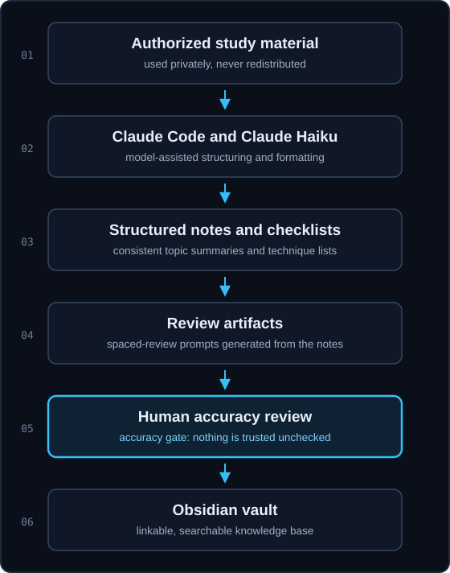

Project · in progress
CPTS study notes pipeline
A Claude Code, Claude Haiku, and Obsidian workflow that turns pasted CPTS study material into structured notes, checklists, and review artifacts, with human review.
Architecture

How it works
Study material is pasted into a local workflow that produces structured notes, checklists, and review artifacts. Every generated artifact passes a human accuracy review before it reaches the vault.
The pipeline exists to make revision reproducible: the same source produces the same structure, and the review step is where correctness is decided. Certified Penetration Testing Specialist (CPTS) preparation is the current use case. The certification is not yet held.
- 01 Authorized study material
- 02 Claude Code and Claude Haiku processing
- 03 Structured notes and checklists
- 04 Review artifacts
- 05 Human accuracy review
- 06 Obsidian vault